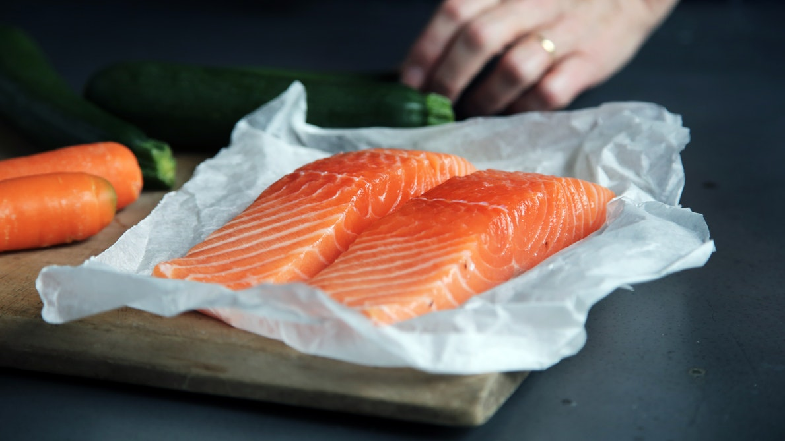
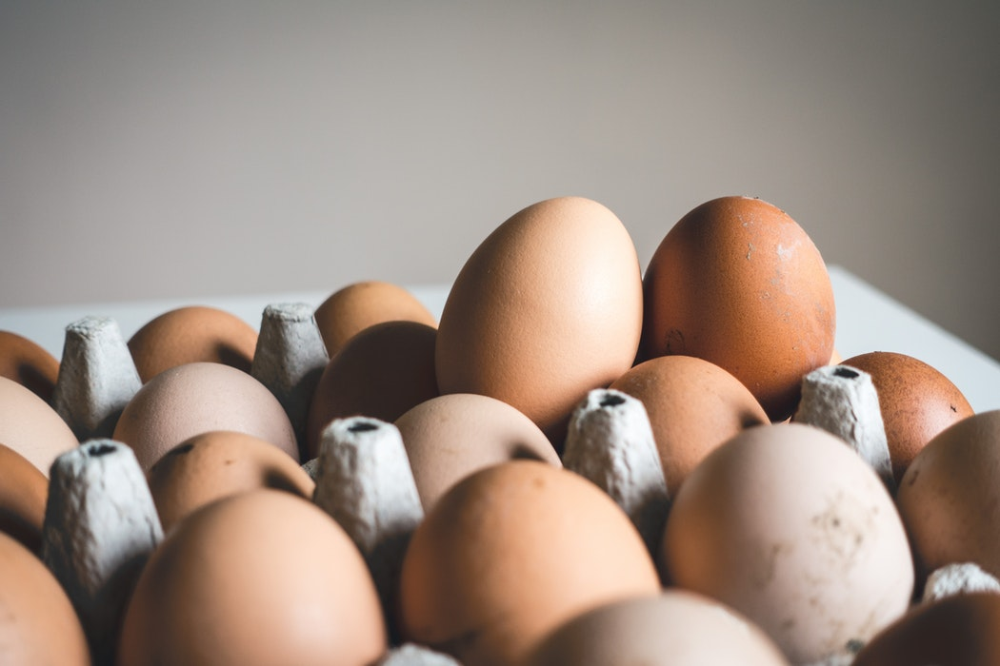
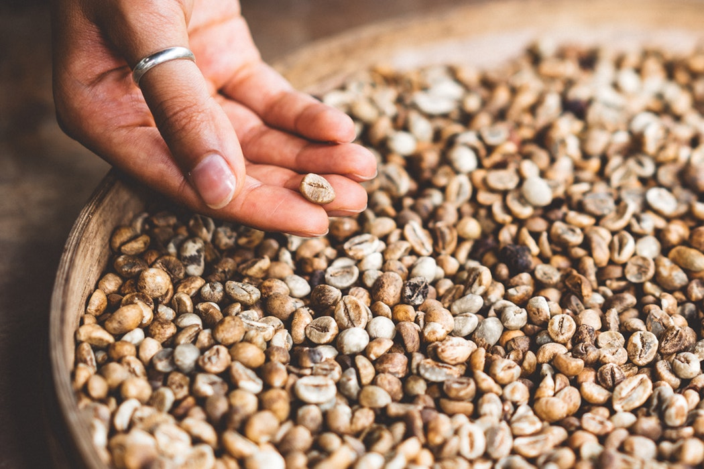
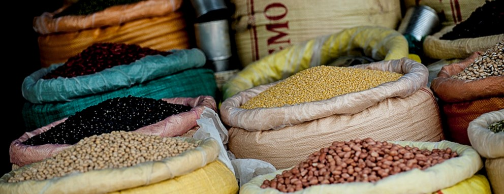
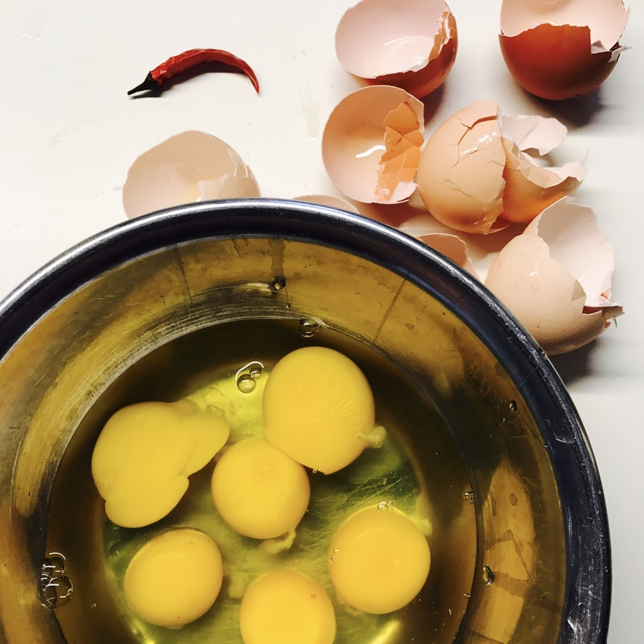
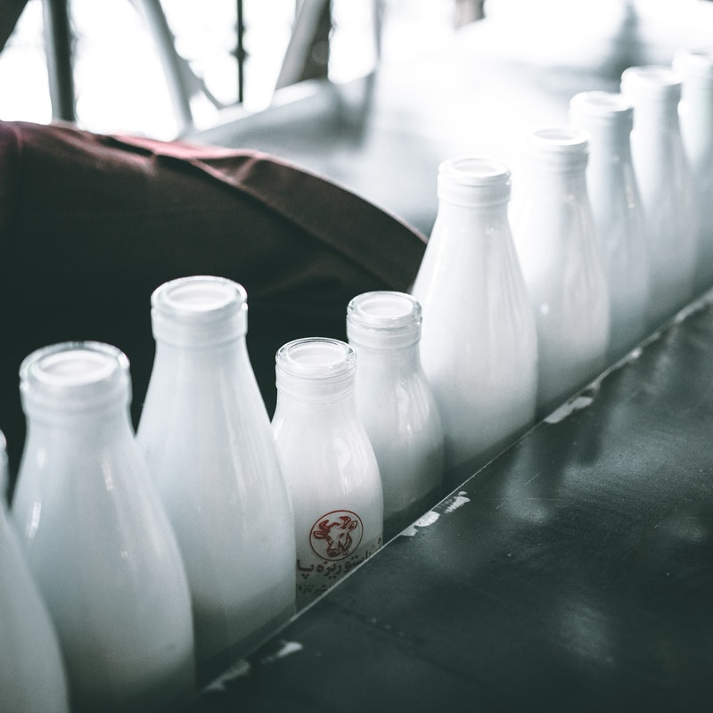
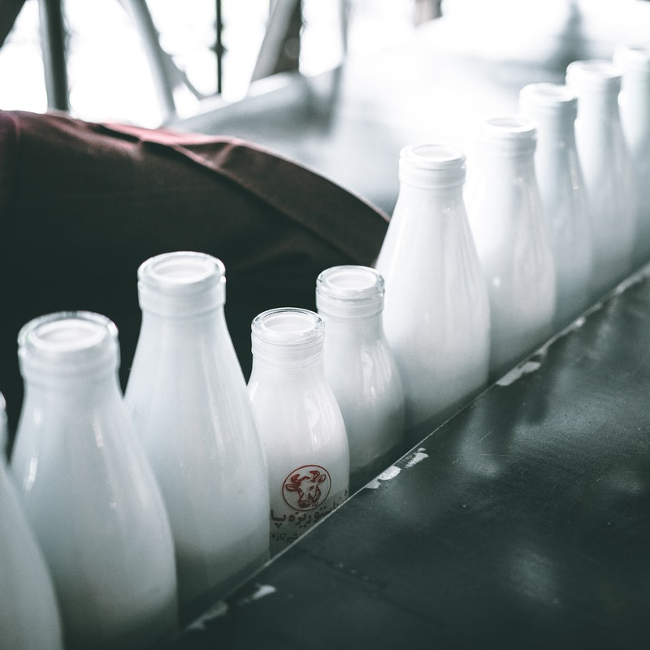

หมู่ที่ 1 : โปรตีน นั้นประกอบไปด้วยอาหารประเภทเนื้อสัตว์ นม ไข่ และถั่วต่างๆ ซึ่งอาหารประเภทนี้จะให้สารอาหารประเภทโปรตีนแก่ร่างกาย เพื่อให้ร่างกายมีความเจริญเติบโต อีกทั้งยังทำให้ร่างกายมีความแข็งแรงขึ้นอีกด้วย ไม่เพียงเท่านั้น มันยังทำหน้าที่ช่วยเสริมภูมิต้านทานเพื่อป้องกันโรคให้แก่ร่างกายได้เป็นอย่างดี สำหรับร่างกายที่ได้รับบาดเจ็บจากการเกิดอุบัติเหตุจนทำให้ร่างกายเกิดการสึกหรอ สารอาหารเหล่านี้ก็ช่วยซ่อมแซมในส่วนนั้นได้ดีทีเดียว ในส่วนของอาหารประเภทนี้ยังถูกนำไปสร้างกระดูก เลือด กล้ามเนื้อ ผิวหนัง น้ำย่อย เม็ดเลือด และฮอร์โมน รวมทั้งภูมิต้านทานเชื้อโรคต่างๆ



เราจะได้รับโปรตีนได้อย่างไร?
เราได้โปรตีนจากอาหารที่รับประทานเข้าไป โปรตีนจะถูกย่อยสลายเป็นกรดอะมิโนในร่างกายของเรา โดยอาหารซึ่งเป็นแหล่งโปรตีนได้แก่ เนื้อสัตว์ต่างๆ สัตว์ปีก ปลา ไข่ และในอาหารที่ไม่ใช่เนื้อสัตว์บางชนิด ก็มีโปรตีนสูงเช่นกัน ได้แก่ ถั่วชนิดต่างๆ และธัญพืช (เช่น จมูกข้าวสาลี และพืชควินัวร์ เป็นต้น) สำหรับคนส่วนใหญ่แล้ว การทานอาหารอย่างพอเหมาะ ครบหมู่ ก็ทำให้ได้รับโปรตีนเพียงพอต่อความต้องการ โดยไม่ต้องทานโปรตีนเสริมแต่อย่างใด
ประโยชน์ของโปรตีน
- โปรตีนเป็นสารอาหารที่มีความจำเป็นต่อการเจริญเติบโตของร่างกาย
- ร่างกายมีความต้องการโปรตีนอยู่เสมอเพื่อนำโปรตีนไปซ่อมแซมเนื้อเยื่อในส่วนที่สึกหรออยู่ทุกวัน
- โปรตีนมีส่วนช่วยรักษาดุลน้ำ เพราะโปรตีนที่มีอยู่ในเซลล์และหลอดเลือดจะช่วยรักษาปริมาณน้ำในเซลล์และหลอดเลือดให้อยู่ในเกณฑ์ที่มีความเหมาะสม
- ช่วยรักษาดุลกรด – ด่างของร่างกาย เนื่องจากกรดอะมิโนนั้นจะมีหน่วยคาร์บอกซีลที่มีฤทธิ์เป็นกรดและเป็นด่าง ดังนั้นโปรตีนจึงมีคุณสมบัติช่วยรักษาดุลกรด – ด่างนั่นเอง และนั่นก็ถือเป็นสิ่งสำคัญต่อการเกิดปฏิกิริยาต่างๆ ภายในร่างกาย

 

ถ้าร่างกายขาดโปรตีนจะมีผลอย่างไร?
โปรตีนเป็นสารอาหารที่มีความสำคัญต่อร่างกายเป็นอย่างมาก โดยเฉพาะการช่วยเสริมสร้างการเจริญเติบโตของร่างกาย ดังนั้นเมื่อขาดโปรตีนหรือได้รับโปรตีนจากอาหารน้อยเกินไป ก็จะมีผลต่อร่างกายดังต่อไปนี้
- กล้ามเนื้ออ่อนแรง มีอาการเหน็บชา และเป็นตะคริวบ่อยครั้ง
- รู้สึกอ่อนเพลีย เจ็บป่วยง่าย ในผู้หญิงอาจพบปัญหาประจำเดือนมาไม่สม่ำเสมอ
- ผิวแห้ง ผมเสียขาดความเงางาม เล็บเปราะบาง แตกหักได้ง่าย
- มีอาการทางระบบประสาท ความจำไม่ดี จดจำอะไรไม่ได้ คิดอะไรไม่ออก ร่วมกับมีความรู้สึกหดหู่ กังวลใจ
- หาดขาดโปรตีนในวัยเด็ก จะส่งผลให้เด็กมีร่างกายแคระแกร็น ไม่สามารถเจริญเติบโตได้เต็มที่เหมือนกับเด็กในวัยเดียวกัน